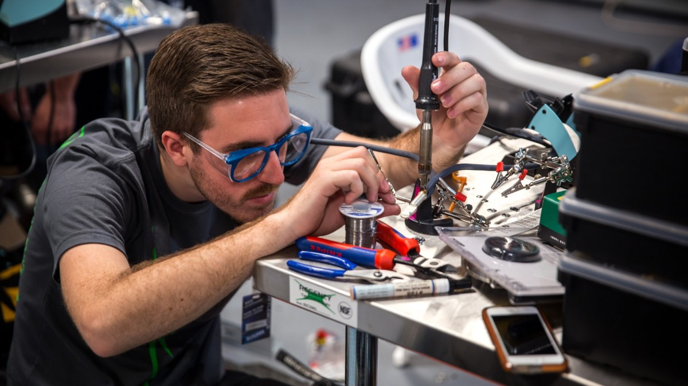
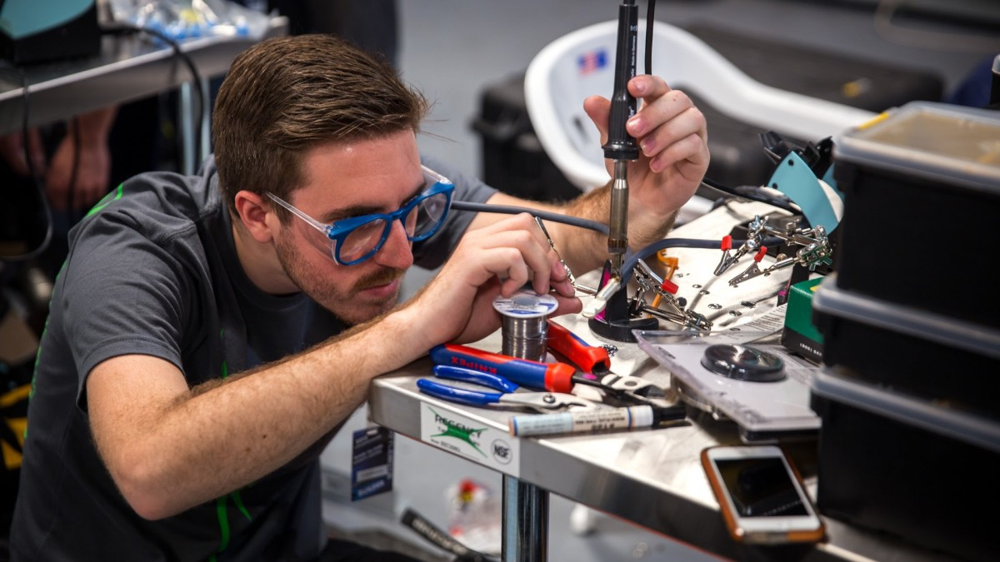

Click on the element below to open the side navigation menu.
☰ openDesigning a robot using CAD allows you to imagine and test different robot designs on a computer before building the real thing.
Coding robots involves programming instructions that enable intelligent automation and decision-making.
Building robots with parts is like assembling a cool robot puzzle with special parts that have their own role.
Without a driver, who is going to make the robot move?